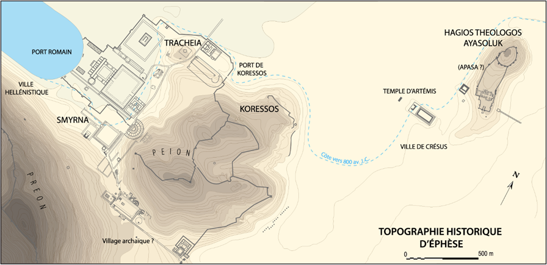

De tous temps les hommes...
La traduction de ce texte a été ...
Réalisé dans le cadre du M1...
Contre les philosophes de la natureLes stoïciens... j’ai beaucoup écritCicéron... En Savoir plus dans les AcadémiquesLes Académiques (en latin Academica) sont un dialogue de Cicéron publié en 45 av. J.-C. considéré comme l’introduction naturelle aux ouvrages philosophiques de Cicéron qui suivent. En Savoir plus et j’ai aussi souvent discuté, suivant la pratiqueUn genre de maïeutique... instaurée par CarnéadeCarnéade, en grec ancien Καρνεάδης / Karneádês (Cyrène, v. 219 av. J.-C. – Athènes, 128 av. J.-C.) philosophe de la Nouvelle Académie, probabiliste. En Savoir plus, avec P. Nigidius FigulusPublius Nigidius Figulus (vers 98 av. J.-C. - 45 av. J.-C.) premier néopythagoricien latin, vers 60 av. J.-C., à Rome. En Savoir plus. Cet homme n’était pas seulement doté de tous les talents dignes d’un homme libre, il était aussi un observateur exigeant et rigoureux de ce que la nature semble avoir couvert d’un voile. A mon avis, cet homme qui succède à ces nobles PythagoriciensL’école pythagoricienne fondée par Pythagore (580-495 av. J.-C.) en Grande-Grèce constitue une confrérie à la fois scientifique et religieuse : le pythagorisme repose en effet sur une initiation et propose à ses adeptes un mode de vie éthique et alimentaire, ainsi que des recherches scientifiques sur le cosmos. dont la doctrine s’est d’une certaine manière éteinte, alors qu’elle avait prospéré pendant quelques siècles en Italie et en Sicile, est apparu pour la faire revivre.
Se rendant à RomeVoir la carte. après sa légation il m’avait attendu à EphèseVoir la carte. tandis que je faisais route vers la CilicieVoir la carte. ; venant de MytilèneVoir la carte. CratippeCratippe de Pergame (en grec : Κράτιππος), était un philosophe péripatéticien de premier plan du 1er siècle avant J.-C. qui a enseigné à Mytilène et à Athènes. En Savoir plus s’y était également rendu pour me saluer et me voir : il est à mes yeux le chef de file incontestable de tous les PéripatéticiensÉcole philosophique fondée par Aristote en -335 à Athènes. La philosophie péripatéticienne a la particularité de considérer qu'Aristote a découvert et révélé la vérité, et que le travail philosophique consiste dorénavant à commenter et à expliciter ses thèses. que j’ai pu écouter. C’est avec grand plaisir que j’ai vu Nigidius et fait la connaissance de Cratippe. Les premières salutations furent consacrées aux demandes mutuelles d’informations.
Nigidius qui doit commencer sa légature en Asie se rend à Ephèse où Cicéron le rencontre lorsqu'il se rend en Cilicie. Cratippe, qui donne des cours de philosophie à Mytilene (sur l'île grecque de Lesbos), apprenant que Cicéron va se rendre a Ephèse, décide d'y aller pour le rencontrer.
Cicéron, qui avait renoncé à la Macédoine, a obtenu un mandat de proconsul en Cilicie, cette petite province romaine d'Asie mineure, charge qu'il prend sans enthousiasme.
Cicéron quitte la province de Cilicie, après avoir maté une insurrection de la cité de Pindénissius : il est riche et tres populaire, quand il est de retour en Italie, où sévit la guerre civile qui oppose César à Pompée. Mais il doit rester hors de Rome, où il rencontre Pompée, et n'assiste pas aux seances du Sénat qui déclenchent le conflit avec César.
Lorsque César envahit l'Italie en janvier, Cicéron fuit Rome dans une de ses maisons de campagne, comme la plupart des sénateurs. César lui propose un rôle de médiateur, mais il préfère rejoindre Pompée, en Epire, en juin.
Victoire de César à Pharsale : Cicéron abandonne le parti pompéien et regagne l'Italie où le vainqueur l'accueille bien.
Pompée, en fuite, visite Cratippe à Mytilene qui lui appliqua l'art de la consolation.
Si Cicéron veut croire un temps à la clémence de César, il ne peut que dénoncer sa dictature, quand il voit l'absence du retour du pouvoir sénatorial.
Ciceron a des relations distantes avec César.
S'il n'est pas le modèle de dirigeant éclairé qu'il théorisait dans son De Republica, il n'est pas non plus le tyran sanguinaire qu'on avait craint ; de toute maniere, il est désormais maître absolu de Rome. Cicéron s'en accommode donc.
En décembre 45 av. J.-C., César s'invite à dîner dans la villa de Cicéron à Pouzzoles : la conversation est agréable et cultivée, n'abordant que des sujets littéraires.
Décès de Tullia, sa fille.
Trois mois plus tard - aux Ides de Mars, le 15 mars 44 av. J.-C. - Cicéron est surpris par l'assassinat de César : les conjurés l'avaient laissé hors de la confidence.
Cicéron envoie son fils Marcus parfaire sa formation philosophico-rhétorique à Athènes : il le confie à son ami Cratippe. Pour ne pas avoir à se rallier à Octave, il envisage de le rejoindre, mais y renonce : Octave le sollicite en effet instamment. Rentré en Italie depuis avril, le jeune homme développe son influence auprès des vétérans de César démobilisés et y parvient puisque Cicéron se rallie à lui en décembre.
Il se lance dans son dernier combat politique : il prononce ses Philippiques, hostiles à Octave.
le Sénat, forcé par une délégation de soldats, accorde le consulat à Octave - il n'avait ni l'âge ni le parcours politique pour être également consul. Avec Marc Antoine et Lépide, Octave formera le second Triumvirat : les triumvirs ont pour programme de venger César de ses meurtriers, mais surtout de renforcer leurs positions politiques en éliminant les potentiels opposants politiques. En novembre, ils proclament une proscription de 17 hommes, dont Cicéron, et ses proches.
Il sera assassiné le 7 decembre 43 av. J.-C. au moment où il quitte sa villa de Formia pour gagner le port de Gaète. Son frère Quintus et son neveu seront eux aussi exécutés peu après dans leur ville natale d'Arpinum.
(Efes en grec ancien/Ephesos en latin)

Histoire : Ephèse faisait partie des cités antiques les plus importantes d’Asie mineure. Elle se situait en Ionie, dans l’ouest de l’Asie mineure entre Phocée (Ancienne cité grecque d’Ionie qui se situait sur la côte de la Mer Egée) et Milet (ancienne cité grecque d’Ionie et l’une des villes les plus prospères d’Asie Mineure et le berceau d’une très grande école de philosophie. C’est une ville portuaire située au bord de la Mer Egée. Pline l’ancien expliquait que « la mer avait l'habitude de monter jusqu'au temple de Diane ». La cité eut un fort développement grâce à sa situation géographique. Les facteurs fondamentaux qui ont contribué à rendre cette cité importante sont :
???
Ville de naissance de Cratippe qui se situe sur l’ile de Lesbos. Également, la capitale de l’île.
Vaste territoire qui comprend, outre la Cilicie proprement dite, l'île de Chypre, la Lycaonie, l'Isaurie, la Pisidie, la Pamphylie, ainsi que les trois diocèses phrygiens de Laodicée, d'Apamée et de Synnade. Disputé entre les rois hellénistiques , le pays est conquis par Pompée en 67 avant J.-C.
C’est seulement ainsi qu’apparait Platon, l’auteur du texte qui aurait pu constituer le sujet de la conversation à venir. Citation en creux donc, par cette œuvre que Cicéron a déjà composée, dans laquelle il nous transmet ce qu'il sait de la Nouvelle Académie – à savoir l’enseignement des disciples de Platon, dans la richesse et les divergences de ses exégèses. Platon y était présenté comme le philosophe de la recherche. De même, Cicéron l’oppose ici aux dogmatiques, les physici, ceux qui ont une conception d'un monde organiquement cohérent, donc régi par la Providence. Notons que le fait de parler de l'Académie en début de préambule pourrait témoigner de son état particulièrement peu développé, encore en construction puisque la méthode cicéronienne la plus fréquente consiste au contraire à prendre comme point de départ la doxographie dans son immense variété – il montre une culture philosophique marquée par une curiosité sans entraves doctrinaires - pour aboutir à l'Académie, l’auteur préférant construire sa réflexion morale sur le constat du dissensus, et ne retrouver Platon qu’in fine.
Né vers 218 av. JC à Cyrène (située à proximité immédiate de la moderne Shahhat de Libye) vieille colonie grecque qui fut la patrie de nombreux penseurs et mathématiciens, ce philosophe s'installa à Athènes où il étudia la dialectique avec le Stoïcien Diogène de Babylone et lut avec un intérêt tout particulier les écrits de Chrysippe. On lui prête d’ailleurs le mot : « Si Chrysippe n'avait pas existé, je ne serais rien. ». Il devint ensuite scholarque de l'Académie (la Troisième), et se consacra à la philosophie. La postérité - dont Cicéron dans De republica, a surtout retenu de la vie de ce philosophe un événement : la fameuse ambassade de -155. Accompagné par Critolaos, scholarque du Lycée, et Diogène de Babylone, scholarque du Portique, Carnéade se rendit à Rome défendre Athènes qui avait été condamnée à une lourde amende pour avoir saccagé la ville d'Oropos. Il présenta deux argumentaires complètement contradictoires sur ce point de justice qui, par leur efficacité rhétorique, semèrent le doute chez les juges – c’est la disputatio in utramque partem. Grâce à cette méthode, les ambassadeurs athéniens gagnèrent leur litige. Que doivent comprendre les lecteurs par la « méthode de Carnéade », dont se revendique Cicéron ? L’efficacité de sa stratégie devait-elle être jugée pernicieuse ? La jeunesse romaine devait-elle être tenue éloignée d’un tel mouvement de pensée antilogique, comme le pensa Caton ? Cette pratique serait-elle une seule disputatio de sophiste pour laquelle toutes les opinions seraient équivalentes ou pourrait-elle aider le philosophe pourra faire apparaitre ce qui, pour lui, est le plus vraisemblable ?
Cicéron (en latin Marcus Tullius Cicero), né le 3 janvier 106 av. J.-C. à Arpinum en Italie et assassiné le 7 décembre 43 av. J.-C. (calendrier julien) à Formies, est un homme d'État romain, un avocat, un philosophe, un rhéteur et un écrivain latin. Citoyen romain, né dans une famille équestre ayant de fortes assises locales à Arpinum, Cicéron n’appartient pas à la noblesse, ce qui en principe ne le destine pas à un rôle politique majeur. Après une solide formation à la rhétorique et au droit, il réussit, grâce à ses talents d’avocat, à se constituer suffisamment d’appuis pour parvenir, en 63 av. J.-C., à la magistrature suprême, le consulat. C'est un homme nouveau (homo novus). La même année, et dans une République en crise menacée par les ambitieux, il déjoue la conjuration de Catilina, notamment grâce à l'énergie de ses discours, les Catilinaires. Ce succès qui fait sa fierté cause ensuite son exil en 58 av. J.-C., pour avoir exécuté des conjurés sans procès. Revenu à Rome en 57 av. J.-C., il ne joue plus de rôle important sur la scène politique, dominée par Pompée et César. Durant la guerre civile qui débute en 49 av. J.-C., il rallie Pompée avec hésitation, puis est forcé de s'accommoder du pouvoir de César, avant de s’allier à Octave contre Antoine. Sa franche opposition à Antoine lui coûte la vie en 43 av. J.-C. [Wikipedia]
Au début de l'année 51 av. J.-C, Marcus Tullius Cicéron est nommé proconsul de Cilicie à la suite d’une loi de Pompée datant de l’année passée. Nouvellement gouverneur, Cicéron quitte Rome au printemps pour se rendre dans la province romaine afin de remplacer Appius Claudius Pulcher, consul depuis 53 av. J.-C. Cicéron gouvernera la Cilicie pendant un an (Durée de la fonction de Consul avant les changements survenus à la suite du principat d’Auguste), soit jusqu'à l'été 50. Mais il ne se plie à son devoir qu'à contre-cœur, et certaines lettres de l'époque témoignent de sa peine à se trouver éloigné de Rome, ainsi que de son dégoût pour sa tâche.
Meurtre de Clodius par Milon lors d'une rencontre qui oppose les partisans des populares et des optimates : Cicéron prend la défense de Milon, mais le procès, très mouvementé, condamne Milon qui s'exile.
Né à Pergame (vers – 100 av. JC), il a été disciple à Athènes de l'académicien Aristos d'Ascalon, frère et successeur d'Antiochos d'Ascalon, puis est passé sous obédience péripaticienne. Il a vécu longtemps à Mytilène (sur l’île grecque de Lesbos) : en -48, il reçut la visite de Pompée, en fuite depuis la défaite subie à Pharsale, et lui appliqua l’art de la « consolation ». La même année, M. Claudius Marcellus, consul et ami de Pompée, vint le visiter ; il devint son disciple. Vers -46, Cratippe se rendit à Ephèse pour rencontrer Cicéron (et à l’occasion Nigidius) comme nous l’apprend ici Cicéron. Il retournera ensuite à Athènes vers -46 : ville où il aura parmi ses disciples Horace en -45 et Marcus, le fils de Cicéron, en -44. Pour Cratippe, dont l’œuvre porte sur la Divination et l'Interprétation des Songes, Cicéron éprouvait une véritable amitié et une telle admiration qu’il obtiendra pour lui le droit de cité : il demandera d’ailleurs à l'Aréopage – conseil de sages d’Athènes réputé pour sa compétence, son intégrité et sa sagesse - un décret priant Cratippe « de demeurer à Athènes et de s'y entretenir avec les jeunes gens pour réhausser le prestige de la ville ». Mais à l’époque où s’inscrit le dialogue sur le Timée (on sait que Cicéron était à Ephèse au mois de juillet de -51), Cratippe est présenté comme un protagoniste à part entière dans ce projet de discussion, alors qu’il n’est historiquement qu’un étranger grec : Cicéron l’inscrit donc en tant que nouveau citoyen, reconnaissant pleinement la valeur de sa pensée qu’il ne soumet pas à l’autorité du pouvoir – il écrira voir en lui le « premier philosophe de ce siècle » (princeps huius aetatis philosophorum, Cic., De off. I, 2.)
Né en Étrurie en -98, il a peut-être été disciple dans sa jeunesse, de Varron, son aîné de 18 ans. Il finit ses études en Grèce, après quoi il se fait disciple du fameux philosophe stoïcien Posidonius , à Rhodes, en -78. Vers -70, il a sans doute fondé un Ordre pythagoricien à Rome. Suétone nous raconte qu’en -63, lors de la conjuration de Catilina, Nigidius aurait prédit que ce serait Octave, et non Catilina, le futur César. C’est cette même année, que se noua son amitié avec Cicéron à qui il apporta son soutien dans la lutte contre Catilina. Son cursus honorum est classique : questeur, sénateur, tribun de la plèbe (en -60), puis préteur – magistrat chargé de rendre la justice - en -58. Pendant la guerre civile, il est favorable à Pompée. Il fut donc banni par César (en -46), qui l’envoie en Asie en tant que légat, en -52 : le texte précise que c’est à la fin de sa légation que Nigidius, sur le chemin de Rome, rencontra Cicéron à Ephèse, au moment où ce dernier attendait la visite de Cratippe. Mais, en -44, date probable du commencement d’écriture de ce texte, le savant philosophe était mort en exil depuis un an, à l’âge de 53 ans. Il est considéré à Rome, à l’égal de Varron, le grand encyclopédiste de la génération précédente. Il fonda un néopythagorisme, en latin, vers -60, comme le fera Eudore d'Alexandrie, vers -40, cette fois en grec, à Alexandrie. Malgré ou en raison de leur divergence philosophique, Nigidius et Cicéron étaient amis, y compris sur la scène politique. Le lecteur de ce dialogue pourrait peut-être voir dans la convocation de cette figure dès les premières lignes, un hommage à celui qui était présenté comme « de tous les hommes le plus savant, le plus probe, jadis très influent »